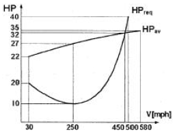
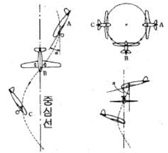
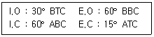
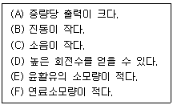
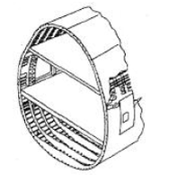
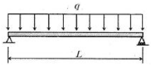
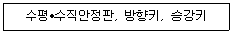
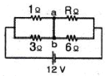
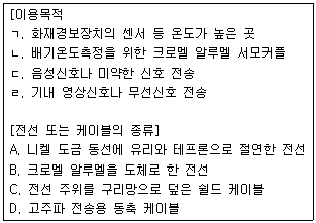

항공산업기사 (2015-03-08 기출문제)
1과목: 항공역학
1. 항공기가 세로 안정하다는 것은 어떤 것에 대해서 안정하다는 의미인가?
- 롤링(Rolling)
- 피칭(Pitching)
- 요잉(Yawing)과 피칭(Pitching)
- 롤링(Rolling)과 피칭(Pitching)
(정답률: 74%)

2. 비행기의 무게가 2500kg, 큰 날개의 면적이 30m2이며, 해발고도에서의 실속속도가 100km/h인 비행기의 최대양력계수는 약 얼마인가?(단, 공기의 밀도는 0.125kg·s2/m4이다.)
- 1.5
- 1.7
- 3.0
- 3.4
(정답률: 70%)
3. 항공기 날개에서의 실속현상이란 무엇을 의미하는가?
- 날개상면의 흐름이 층류로 바뀌는 현상이다.
- 날개상면의 항력이 갑자기 0이 되는 현상이다.
- 날개상면의 흐름속도가 급격히 증가하는 현상이다.
- 날개상면의 흐름이 날개상면의 앞전 근처로부터 박리되는 현상이다.
(정답률: 86%)
4. 날개의 시위길이가 6m, 공기의 흐름 속도가 360km/h, 공기의 동점성계수가 0.3cm2/sec일 때 레이놀즈수는 약 얼마인가?
- 1x107
- 2x107
- 1x109
- 2x109
(정답률: 76%)
5. 헬리콥터의 자동회전(Autorotation)비행에 대한 설명이 아닌 것은?
- 호버링의 일종으로 양력과 무게의 균형을 유지한다.
- 기관이 고장났을 경우 로터블레이드의 독립적인 자유회전에 의한 강하비행을 말한다.
- 위치에너지를 운동에너지로 바꾸면서 무동력으로 하강하는 것이다.
- 공기흐름은 상향공기흐름을 일으켜 착륙에 필요한 양력을 발생시킨다.
(정답률: 58%)
6. 프로펠러 깃의 미소길이에 발생하는 미소양력이 dL, 항력이 dD이고, 이 때의 유효유입각(effective advance angle)이 α라면 이 미소길이에서 발생하는 미소추력은?
- dLcosα - dDsinα
- dLsinα - dDcosα
- dLcosα + dDsinα
- dLsinα + dDcosα
(정답률: 64%)
7. 표준대기의 기온, 압력, 밀도, 음속을 옳게 나열한 것은?
- 15℃, 750mmHg, 1.5kg/m3, 330m/s
- 15℃, 760mmHg, 1.2kg/m3, 340m/s
- 18℃, 750mmHg, 1.5kg/m3, 340m/s
- 158℃, 756mmHg, 1.2kg/m3, 330m/s
(정답률: 88%)
8. 무게가 500lbs인 비행기의 마력곡선이 그림과 같다면 수평정상비행할 때 최대상승률은 몇 ft/min인가? (단, HPreq는 필요마력, HPav는 이용마력, 비행경로선과 추력선 사이각, 비행경로각은 작다.)

- 1122
- 1555
- 2360
- 2500
(정답률: 44%)
9. 항공기의 동적안정성이 양(+)인 상태에서의 설명으로 옳은 것은?
- 운동의 주기가 시간에 따라 일정하다.
- 운동의 주기가 시간에 따라 점차 감소한다.
- 운동의 진폭이 시간에 따라 점차 감소한다.
- 운동의 고유진동수가 시간에 따라 점차 감소한다.
(정답률: 72%)
10. 비행기의 방향안정에 일차적으로 영향을 주는 것은?
- 수평꼬리날개
- 플랩
- 수직꼬리날개
- 날개의 쳐든각
(정답률: 86%)
11. 항공기 주위를 흐르는 공기의 레이놀즈수와 마하수에 대한 설명으로 틀린 것은?
- 마하수는 공기의 온도가 상승하면 커진다.
- 레이놀즈수는 공기의 속도가 증가하면 커진다.
- 마하수는 공기 중의 음속을 기준으로 나타낸다.
- 레이놀즈수는 공기흐름의 점성을 기준으로 한다.
(정답률: 68%)
12. 유체흐름을 이상유체(Ideal fluid)로 설정하기 위한 조건으로 옳은 것은?
- 압력변화가 없다.
- 온도변화가 없다.
- 흐름속도가 일정하다.
- 점성의 영향을 무시한다.
(정답률: 78%)
13. 프로펠러에 흡수되는 동력과 프로펠러의 회전수(n), 프로펠러의 지름(D)에 대한 관계로 옳은 것은?
- n의 제곱에 비례하고 D의 제곱에 비례한다.
- n의 제곱에 비례하고 D의 3제곱에 비례한다.
- n의 3제곱에 비례하고 D의 4제곱에 비례한다.
- n의 3제곱에 비례하고 D의 5제곱에 비례한다.
(정답률: 77%)
14. 비행기의 조종력을 결정하는 요소가 아닌 것은?
- 조종면의 크기
- 비행기의 속도
- 비행기의 추진효율
- 조종면의 힌지모멘트 계수
(정답률: 71%)
15. 정상선회에 대한 설명으로 옳은 것은?
- 경사각이 크면 선회반경은 커진다.
- 선회반경은 속도가 클수록 작아진다.
- 경사각이 클수록 하중배수는 커진다.
- 선회시 실속속도는 수평비행 실속속도보다 작다.
(정답률: 61%)
16. 헬리콥터 회전날개의 추력을 계산하는데 사용되는 이론은?
- 기관의 연료소비율에 따른 연소이론
- 로터 블레이드의 코닝각의 속도변화 이론
- 로터 블레이드의 회전관성을 이용한 관성 이론
- 회전면 앞에서의 공기유동량과 회전면 뒤에서의 공기유동량의 차이를 운동량에 적용한 이론
(정답률: 82%)
17. 비행기가 착륙할 때 활주로 15m 높이에서 실속속도보다 더 빠른 속도로 활주로에 진입하며 강하하는 이유는?
- 비행기의 착륙거리를 줄이기 위해서
- 지면효과에 의한 급격한 항력증가를 줄이기 위해서
- 항공기 소음을 속도증가를 통해 감소시키기 위해서
- 지면 부근의 돌풍에 의한 비행기의 자세교란을 방지하기 위해서
(정답률: 76%)
18. 프로펠러 항공기가 최대 항속거리로 비행할 수 있는 조건으로 옳은 것은? (단, CD는 항력계수, CL은 양력계수이다.)
- (CD / CL) 최대
- (CL1/2 / CD) 최대
- (CL / CD) 최대
- (CD1/2/ CL) 최대
(정답률: 73%)
19. 그림과 같은 항공기의 운동은 어떤 운동의 결합으로 볼 수 있는가?

- 자전운동(Autorotation)+수직강하
- 자전운동(Autorotation)+수평선회
- 균형선회(Turn coordination)+빗놀이
- 균형선회(Turn coordination)+수직강하
(정답률: 77%)
20. 날개 뿌리 시위길이가 60cm이고 날개 끝 시위길이가 40cm인 사다리골 날개의 한쪽 날개 길이가 150cm일 때 평균 시위길이는 몇 cm인가?
- 40
- 50
- 60
- 75
(정답률: 66%)
2과목: 항공기관
21. 체적 10cm3 속의 완전기체가 압력 760mmHg 상태에서 체적이 20cm3로 단열팽창하면 압력은 몇 mmHg로 변하는가?(단, 비열비는 1.4이다.)
- 217
- 288
- 302
- 364
(정답률: 63%)
22. 왕복기관의 마그네토가 점화에 유효한 고전압을 발생할 수 있는 최소 회전속도를 무엇이라고 하는가?
- E-갭 스피드(E-gap speed)
- 아이들 스피드(idle speed)
- 2차 회전수(secondary speed)
- 커밍-인 스피드(coming-in speed)
(정답률: 66%)
23. 항공기용 왕복기관의 밸브 개폐 시기가 다음과 같다면 밸브 오버랩(valve over lap)은 몇 도(°)인가?

- 15
- 45
- 60
- 75
(정답률: 83%)
24. 가스터빈기관의 효율이 높을수록 얻을 수 있는 장점이 아닌 것은?
- 연료 소비율이 작아진다.
- 활공거리를 길게 할 수 있다.
- 같은 적재연료에서 항속거리를 길게 할 수 있다.
- 필요한 적재 연료의 감소분만큼 유상하중을 증가시킬 수 있다.
(정답률: 63%)
25. 팬 블레이드의 미드 스팬 쉬라우드(mid span shroud)에 대한 설명으로 틀린 것은?
- 유입되는 공기의 흐름을 원활하게 하여 공기역학적인 항력을 감소시킨다.
- 팬 블레이드 중간에 원형링을 형성하게 설치되어 있다.
- 상호 마찰로 인한 마모현상을 줄이기 위해 주기적으로 코팅을 한다.
- 공기흐름에 의한 블레이드의 굽힘현상을 방지하는 기능을 한다.
(정답률: 47%)
26. 항공기 기관용 윤활유의 점도지수(viscosity Index)가 높다는 것은 무엇을 의미하는가?
- 온도변화에 따른 윤활유의 점도 변화가 작다.
- 온도변화에 따른 윤활유의 점도 변화가 크다.
- 압력변화에 따른 윤활유의 점도 변화가 작다.
- 압력변화에 따른 윤활유의 점도 변화가 크다.
(정답률: 79%)
27. [보기]에서 왕복기관과 비교했을 때 가스터빈기관의 장점만을 나열한 것은?

- (A), (B), (D), (E)
- (A), (C), (D), (F)
- (B), (C), (E), (F)
- (A), (D), (E), (F)
(정답률: 74%)
28. 경항공기에서 프로펠러 감속기어(reduction gear)를 사용하는 주된 이유는?
- 구조를 간단히 하기 위하여
- 깃의 숫자를 많게 하기 위하여
- 깃 끝 속도를 제한하기 위하여
- 프로펠러 회전속도를 증가시키기 위하여
(정답률: 83%)
29. 정속 프로펠러에서 프로펠러가 과속상태(over speed)가 되면 조속기 플라이 웨이트(fly weight)의 상태는?
- 밖으로 벌어진다.
- 무게가 감소된다.
- 안으로 오므라든다.
- 무게가 증가된다.
(정답률: 77%)
30. 왕복기관의 실린더를 분해 및 조립할 때 주의사항으로 틀린 것은?
- 실린더를 장착할 때 12시 방향의 너트를 먼저 조인 후 다른 너트를 조인다.
- 실린더를 떼어내기 전에 외부에 부착된 부품들을 먼저 떼어 낸다.
- 실린더를 떼어낼 때 피스톤 행정을 배기 상사점 위치에 맞춘다.
- 실린더를 장착할 때 피스톤 링의 터진 방향을 링의 개수에 따라 균등한 각도로 맞춘다.
(정답률: 71%)
31. 가스터빈기관에서 압축기 실속(compressor stall)의 원인이 아닌 것은?
- 압축기의 손상
- 터빈의 변형 또는 손상
- 설계 rpm 이하에서의 기관 작동
- 기관 시동용 블리드 공기의 낮은 압력
(정답률: 56%)
32. 왕복기관 동력을 발생시키는 행정은?
- 흡입행정
- 압축행정
- 팽창행정
- 배기행정
(정답률: 74%)
33. 가스터빈기관의 시동계통에서 자립회전속도(self-accelerating speed)의 의미로 옳은것은?
- 시동기를 켤 때의 회전속도
- 점화가 일어나서 배기가스 온도가 증가되기 시작하는 상태에서의 회전속도
- 아이들(idle) 상태에 진입하기 시작했을 때의 회전속도
- 시동기의 도움없이 스스로 회전하기 시작하는 상태에서의 회전속도
(정답률: 82%)
34. 윤활유 여과기에 대한 설명으로 옳은 것은?
- 카트리지형은 세척하여 재사용이 가능하다.
- 여과능력은 여과기를 통과할 수 있는 입자의 크기인 미크론(micron)으로 나타낸다.
- 바이패스밸브는 기관 정지시 윤활유의 역류를 방지하는 역할을 한다.
- 바이패스밸브는 필터 출구압력이 입구압력보다 높을 때 열린다.
(정답률: 68%)
35. 항공기 왕복기관의 오일 탱크 안에 부착된 호퍼(hopper)의 주된 목적은?
- 오일을 냉각시켜 준다.
- 오일 압력을 상승시켜 준다.
- 오일 내의 연료를 제거시켜 준다.
- 시동시 오일의 온도 상승을 돕는다.
(정답률: 74%)
36. 단열변화에 대한 설명으로 옳은 것은?
- 팽창일을 할 때는 온도가 올라가고 압축일을 할 때는 온도가 내려간다.
- 팽창일을 할 때는 온도가 내려가고 압축일을 할 때는 온도가 올라간다.
- 팽창일을 할 때와 압축일을 할 때에 온도가 모두 올라간다.
- 팽창일을 할 때와 압축일을 할 때에 온도가 모두 내려간다.
(정답률: 68%)
37. 부자식 기화기에서 기관이 저속상태일 때 연료를 분사하는 장치는?
- Venturi
- Main discharge nozzle
- Main orifice
- Idle discharge nozzle
(정답률: 64%)
38. 가스터빈기관의 연소실에 부착된 부품이 아닌 것은?
- 연료노즐
- 선회깃
- 가변정익
- 점화플러그
(정답률: 59%)
39. 항공기 왕복기관의 제동마력과 단위시간당 기관이 소비한 연료 에너지와의 비는 무엇인가?
- 제동열효율
- 기계열효율
- 연료소비율
- 일의 열당량
(정답률: 63%)
40. 다음 중 민간 항공기용 가스터빈기관에 주로 사용되는 연료는?
- JP-4
- Jet A-1
- JP-8
- Jet B-5
(정답률: 79%)
3과목: 항공기체
41. 복합재료에서 모재(matrix)와 결합되는 강화재 (reinforcing material)로 사용되지 않는 것은?
- 유리
- 탄소
- 에폭시
- 보론
(정답률: 75%)
42. 접개들이 착륙장치를 비상으로 내리는(down) 3가지 방법이 아닌 것은?
- 핸드펌프로 유압을 만들어 내린다.
- 축압기에 저장된 공기압을 이용하여 내린다.
- 핸들을 이용하여 기어의 업(up)락크를 풀었을 때 자중에 의하여 내린다.
- 기어핸들 밑에 있는 비상 스위치를 눌러서 기어를 내린다.
(정답률: 70%)
43. 조종간의 작동에 대한 설명으로 옳은 것은?
- 조종간을 뒤로 당기면 승강타가 내려간다.
- 조종간을 앞으로 밀면 양쪽의 보조날개가 내려간다.
- 조종간을 왼쪽으로 움직이면 왼쪽의 보조날개가 내려간다.
- 조종간을 오른쪽으로 움직이면 왼쪽의 보조날개가 내려간다.
(정답률: 73%)
44. 판재를 절단하는 가공 작업이 아닌 것은?
- 펀칭(punching)
- 블랭킹(blanking)
- 트리밍(trimming)
- 크림핑(crimping)
(정답률: 58%)
45. 진주색을 띄고 있는 알루미늄합금 리벳은 어떤 방식처리를 한 것인가?
- 양극처리를 한 것이다.
- 금속도료로 도장한 것이다.
- 크롬산 아연 도금한 것이다.
- 니켈, 마그네슘으로 도금한 것이다.
(정답률: 62%)
46. 용접 작업에 사용되는 산소•아세틸렌 토치 팁(tip)의 재질로 가장 적당한 것은?
- 납 및 납합금
- 구리 및 구리합금
- 마그네슘 및 마그네슘 합금
- 알루미늄 및 알루미늄 합금
(정답률: 74%)
47. 한쪽 끝은 고정되어 있고 다른 한쪽 끝은 자유단으로 되어있는 지름이 4cm, 길이가 200cm인 원기둥의 세장비는 약 얼마인가?
- 100
- 200
- 300
- 400
(정답률: 55%)
48. 연료를 제외한 적재된 항공기의 최대 무게를 나타내는 것은?
- 최대 무게(maximum weight)
- 영 연료 무게(zero fuel weight)
- 기본 자기 무게(basic empty weight)
- 운항 빈 무게(operating empty weight)
(정답률: 81%)
49. 샌드위치(sandwich) 구조에 대한 설명으로 옳은 것은?
- 트러스구조의 대표적인 형식이다.
- 강도와 강성에 비해 다른 구조보다 두꺼워 항공기의 중량이 증가하는 편이다.
- 동체의 외피 및 주요 구조부분에 사용되는 경우가 많다.
- 구조골격의 설치가 곤란한 곳에 상하 외피 사이에 벌집 구조를 접착재로 고정하여 면적당 무게가 적고 강도가 큰 구조이다.
(정답률: 80%)
50. 항공기의 안전운항을 담당하는 기관에서 항공기를 사용 목적이나 소요 비행 상태의 정도에 따라 분류하여 정하는 하중배수와 같은 값이 될 때의 속도는?
- 설계운용속도
- 설계급강하속도
- 설계순항속도
- 설계돌풍운용속도
(정답률: 64%)
51. 플러쉬 머리(flush head) 리벳작업을 할 때 끝거리 및 리벳간격의 최소기준으로 옳은 것은?
- 끝거리는 리벳직경의 2.5배 이상, 간격은 3배이상
- 끝거리는 리벳직경의 3배 이상, 간격은 2배이상
- 끝거리는 리벳직경의 2배 이상, 간격은 3배이상
- 끝거리는 리벳직경의 3배 이상, 간격은 3배이상
(정답률: 61%)
52. 다음 중 항공기의 부식을 발생시키는 요소로 볼 수 없는 것은?
- 탱크내의 유기물
- 해면상의 대기 염분
- 암회색의 인산철피막
- 활주로 동결 방지제의 염산
(정답률: 68%)
53. 항공기의 무게중심이 기준선에서 90in에 있고, MAC의 앞전이 기준선에서 82in인 곳에 위치한다면 MAC가 32in인 경우 중심은 몇 %MAC 인가?
- 15
- 20
- 25
- 35
(정답률: 68%)
54. 그림과 같은 항공기 동체 구조에 대한 설명으로 틀린 것은?

- 외피가 두꺼워져 미사일의 구조에 적합하다.
- 응력스킨구조의 대표적인 형식 중 하나이다.
- 외피는 하중의 일부만 담당하고 나머지 하중은 골조구조가 담당한다.
- 벌크헤드, 프레임, 세로대, 스트링어, 외피 등의 부재로 이루어진다.
(정답률: 75%)
55. 진공백을 이용한 항공기의 복합재료 수리시 사용 되는 것이 아닌 것은?
- 요크
- 브리더
- 필 플라이
- 브레더
(정답률: 54%)
56. 고속 항공기 기체의 재료로서 알루미늄합금이 적합하지 않을 경우 티타늄 합금으로 대체한다면 알루미늄합금의 어떠한 이유 때문인가?
- 마찰저항이 너무 크다.
- 온도에 대한 제1변태점이 비교적 낮다.
- 충격에너지를 효과적으로 흡수하지 못한다.
- 비중이 높아 항공기 기체의 중량이 너무 크다.
(정답률: 80%)
57. 케이블 조종계통에 사용되는 페어리드의 역할이 아닌 것은?
- 작은 각도의 범위에서 방향을 유도한다.
- 작동 중 마찰에 의한 구조물의 손상을 방지한다.
- 케이블의 엉킴이나 다른 구조물과의 접촉을 방지한다.
- 케이블의 직선운동을 토크튜브의 회전운동으로 바꿔준다.
(정답률: 67%)
58. 그림과 같이 길이 L 전체에 등분포하중 q를 받고 있는 단순보의 최대전단력은?

- q/L
- qL/4
- qL/2
- qL2/8
(정답률: 48%)
59. 리벳을 열처리하여 연화시킨 다음 저온 상태의 아이스박스에 보관하면 리벳의 시효경화를 지연시켜 연화상태가 유지되는 리벳은?
- 1100
- 2024
- 2117
- 5⑤6
(정답률: 82%)
60. [보기]와 같은 구조물을 포함하고 있는 항공기 부위는?

- 착륙장치
- 나셀
- 꼬리날개
- 주날개
(정답률: 84%)
4과목: 항공장비
61. 황산납 축전지(lead acid battery)의 과충전상태를 의심할 수 있는 증상이 아닌 것은?
- 전해액이 축전지 밖으로 흘러나오는 경우
- 축전지에 흰색 침전물이 너무 많이 묻어있는 경우
- 축전지 셀의 케이스가 구부러졌거나 찌그러진 경우
- 축전지 윗면 캡 주위의 약간의 탄산칼륨이 있는 경우
(정답률: 65%)
62. 외력을 가하지 않는 한 자이로가 우주공간에 대하여 그 자세를 계속적으로 유지하려는 성질은?
- 방향성
- 강직성
- 지시성
- 섭동성
(정답률: 80%)
63. 항공기 조리실이나 화장실에서 사용한 물은 배출구를 통해 밖으로 빠져나가는데 이때 결빙방지를 위해 사용되는 전원에 대한 설명으로 옳은 것은?
- 지상에서는 저전압, 공중에서는 고전압 전원이 항상 공급된다.
- 공중에서는 저전압, 지상에서는 고전압 전원이 항상 공급된다.
- 공중에서만 전원이 공급되며 이 때 전원은 고전압이다.
- 지상에서만 전원이 공급되며 이 때 전원은 저전압이다.
(정답률: 71%)
64. 운항 중 목표 고도로 설정한 고도에 진입하거나 벗어났을 때 경보를 냄으로써 조종사의 실수를 방지하기 위한 장치는?
- SELCAL
- Radio altimeter
- Altitude alert system
- Air traffic control
(정답률: 74%)
65. 고도계에서 발생되는 오차가 아닌 것은?
- 북선오차
- 기계오차
- 온도오차
- 탄성오차
(정답률: 71%)
66. 유압계통에서 압력조절기와 비슷한 역할을 하지만 압력조절기보다 약간 높게 조절되어 있어 그 이상의 압력이 되면 작동되는 장치는?
- 체크밸브
- 리저버
- 릴리프밸브
- 축압기
(정답률: 72%)
67. 항공기 계기의 분류에서 비행계기에 속하지 않는 것은?
- 고도계
- 회전계
- 선회경사계
- 속도계
(정답률: 57%)
68. 항공계기의 구비 조건이 아닌 것은?
- 정확성
- 대형화
- 내구성
- 경량화
(정답률: 84%)
69. 미국연방항공국(FAA)의 규정에 명시된 항공기의 최대 객실고도는 약 몇 ft인가?
- 6000
- 7000
- 8000
- 9000
(정답률: 86%)
70. 정비를 위한 목적으로 지상근무자와 조종실 사이의 통화를 위한 장치는?
- Cabin interphone system
- Flight interphone system
- Passenger address system
- Service interphone system
(정답률: 76%)
71. 화재탐지기로 사용하는 장치가 아닌 것은?
- 유닛식 탐지기
- 연기 탐지기
- 이산화탄소 탐지기
- 열전쌍 탐지기
(정답률: 63%)
72. 계기 착륙 장치(Instrument ianding system)에서 활주로 중심을 알려 주는 장치는?
- 로컬라이저(localizer)
- 마커 비컨(marker beacon)
- 글라이드 슬로프(glide slope)
- 거리 측정 장치(distance measuring equipment)
(정답률: 70%)
73. 면적이 2in2인 A피스톤과 10in2인 B피스톤을 가진 실린더가 유체역학적으로 서로연결 되어 있을 경우 A피스톤에 20lbs의 힘이 가해질 때 B피스톤에 발생되는 힘은몇 lbs인가?
- 100
- 20
- 10
- 5
(정답률: 56%)
74. 소형항공기의 12V 직류전원계통에 대한 설명으로 틀린 것은?
- 직류발전기는 전원전압을 14V로 유지한다.
- 배터리와 직류발전기는 접지귀환방식으로 연결된다.
- 메인 버스와 배터리 버스에 연결된 전류계는 배터리 충전시 (-)를 지시한다.
- 배터리는 엔진시동기(Starter)의 전원으로 사용된다.
(정답률: 65%)
75. 변압기(transformer)는 어떠한 전기적 에너지를 변환시키는 장치인가?
- 전류
- 전압
- 전력
- 위상
(정답률: 80%)
76. 항법시스템을 자립, 무선, 위성항법시스템으로 분류했을 때 자립항법시스템(selfcontained system)에 해당되는 장치는?
- LORAN(long range navigation)
- VOR(VHF omnidirectional range)
- GPS(global positioning system)
- INS(inertial navigation system)
(정답률: 62%)
77. 화재탐지기에 요구되는 기능과 성능에 대한 설명으로 틀린 것은?
- 화재의 지속기간 동안 연속적인 지시를 할 것
- 화재가 지시하지 않을 때 최소전류요구이어야 할 것
- 화재가 진화되었다는 것에 대해 정확한 지시를 할 것
- 정비작업 또는 정비취급이 복잡하더라도 중량이 가볍고 용이할 것
(정답률: 72%)
78. 지상파(ground wave)가 가장 잘 전파되는 것은?
- LF
- UHF
- HF
- VHF
(정답률: 51%)
79. 그림과 같은 회로도에서 a, b간에 전류가 흐르지 않도록 하기 위해서는 저항R은 몇 Ω으로 해야 하는가?

- 1
- 2
- 3
- 4
(정답률: 76%)
80. 항공기 부품의 이용목적과 이에 적합한 전선이나 케이블의 종류를 옳게 연결한 것은?

- ㄱ - B
- ㄴ - C
- ㄷ - A
- ㄹ - D
(정답률: 67%)